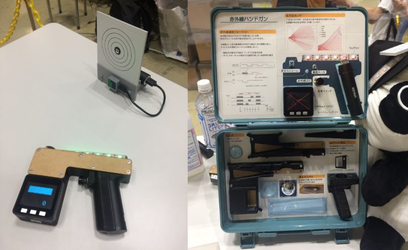
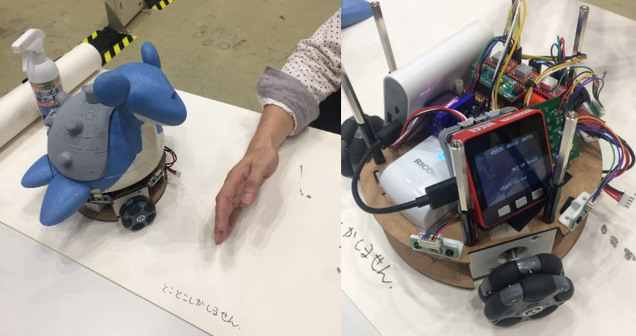
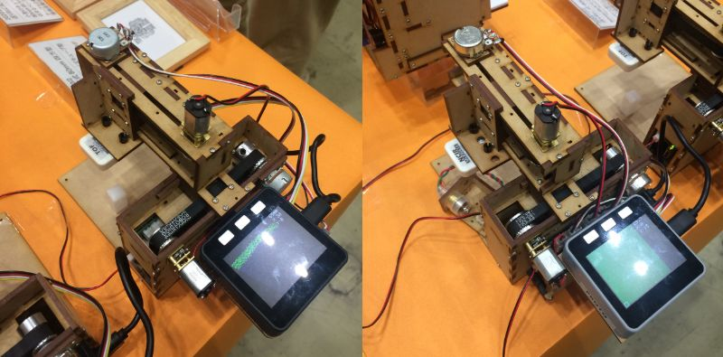
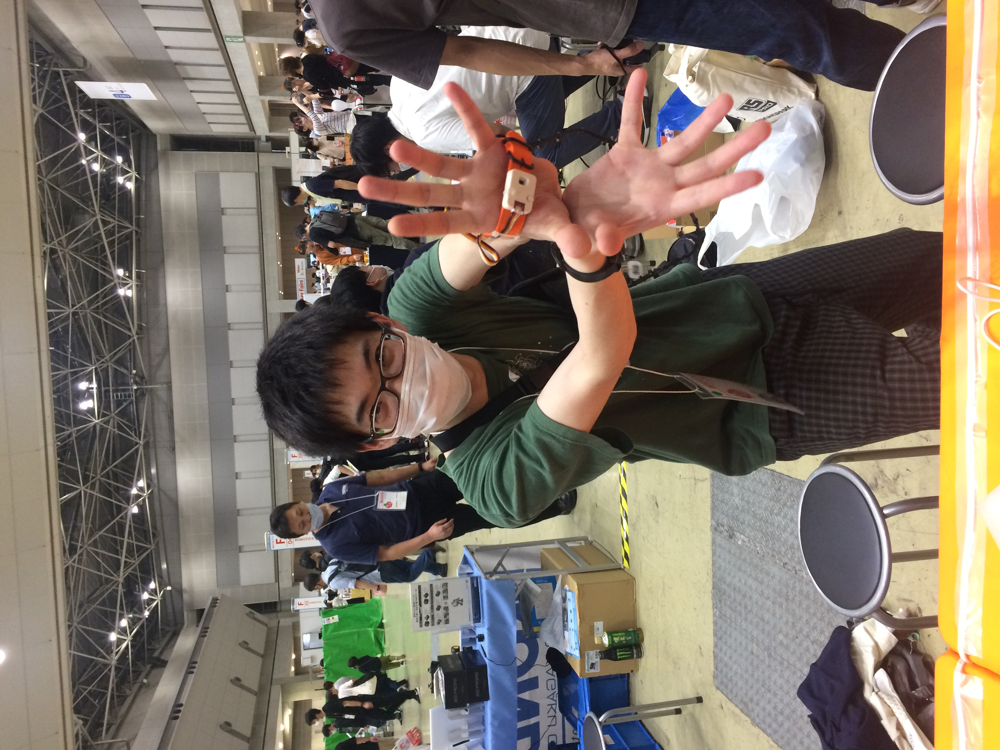

今年も開催された「Maker Faire Tokyo」。会場の東京ビッグサイトで見かけたM5Stack達をレポートします。
新型コロナウイルスの影響で大型イベントが軒並み中止となる中で開催された今年の「Maker Faire Tokyo 2020」。 参加者の皆さんの連絡先の事前登録や入場口での検温など万全の対策でイベントを実施された主催者側の皆さんのご苦労も大変だったと思いますが、会場に入るとそういった不安を吹き飛ばすように、会場は出展者の皆さんの熱気に溢れていました。


M5Stackと赤外線の送信機、受信機、モバイルバッテリなどを組み合わせたハンドガン。 スイッチを押すと赤外線が発射（照射？）されます。ガンの先端に受信部があり、そこに赤外線が照射されるとヒットです。 今年2月に開催されたM5Stackユーザーミーティングでも紹介されていたものですが、MFTの会場では対戦ゲームができるようになっていました。 Echo Matrixで作られた的も用意され、ちびっこ達に大人気で、順番待ちの列が絶えませんでした。 作者の方に「製品化するのですか？」と聞いたら、「作るのに興味があるので、製品化は考えていません。」とのことでした。


センサで周りにぶつからないように制御しながら、メカナムホイールで動き回る作品。本体にハンディプリンタが内蔵され、動きながら紙の上に絵を描きます。 見たときは残念ながらプリンタが不調で絵が描けず、「とことこしかしません」と書かれていたのが可愛かったです。センサやメカナムホイールをM5Stackで制御していました。


前後左右に動くアームにToF測距センサユニットとNCIR非接触温度センサユニットをつけたXYスキャナ。 ToF測距センサは物体の凹凸を、NCIR非接触温度センサは物体の表面温度分布を測定して2次元のマップが作れます。 アームの精巧な動きが魅力的でした。
交通量調査などで使う「カチカチ」いうカウンタ（数取器というそうです）で時計を作った作品。 カウンタのボタン部分をサーボモータで引っ張ってカウンタを進めます。 見たときは午後3時37分だったので「1537」という数字が表示されていて、しばらく待っていたらサーボモータが「ジーン」と回り、時計が「1538」に進みました。 作者の方は「59分から00分に進むときはカウンタを40回カチカチするので、そこが見せ場です！」とおっしゃっていました。 23時59分の次はどうするのか気になる作品でした。

名前の通りの作品。M5StickCと加速度センサを左手につけ、その動きに合ったゲームサウンドを鳴らします。作者の方の大きな動きと笑顔で思わず惹きつけられた作品でした。

いろいろなセンサをケージに取り付け、小動物の健康管理をする作品。環境センサでケージの温湿度を、モーションセンサで動物の活動量を、重さセンサで動物の体重を、ドアセンサで回転車の回転数を測定する作品。デモの主人公はハムスター君でしたが、夜行性らしく、巣の奥で寝ていました。ちなみに体重は41gとのことで、意外に重いんですね。
M5StackとCO2センサで室内のCO2濃度を表示するデバイス。新型コロナ対策で換気が大切なので、必要なデバイスですね。
とあるブースにあった非接触温度センサを使った温度計。M5Stackはメインの作品ではないところでも活躍していました。
「今年はJimmyさんは来てないのかな？」と思ったら、いました。（ほぼ）等身大のJimmyさんパネル。M5Stack社の製品群を抱えているのですが、よく見ると未発売の電子ペーパーを搭載したモデルも写っています。日本の総販売代理店のスイッチサイエンスの方のお話では「まだまだいろいろな製品を出してくる」とのことでしたので、これからがますます楽しみです。がんばれ、M5Stack！